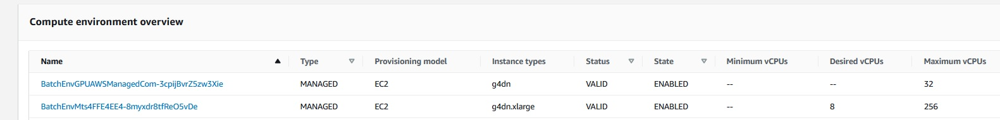
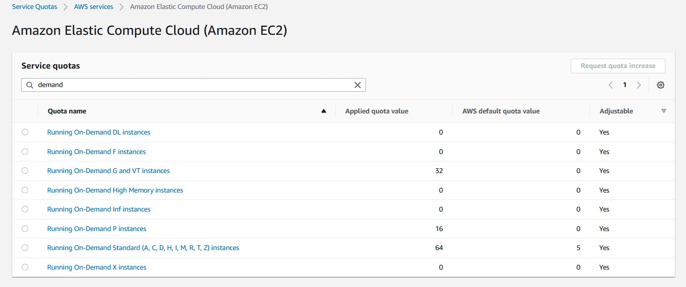

SCC
Brasil
os cloud gurus
Software Cloud Consulting
Your software development, cloud, consulting & shoring company
AWS Batch - A deep dive

By Wolfgang Unger
Working with AWS Batch to run container in parallel is not quite simple.
There are a bunch of configurations you must set up correct to launch the right instance types
and amount of instances.
This tutorial will try to clarify the imporant configurations and parameters you need to run
batch as expected.
Job Definition
The first important resource is the Job Definition of the Batch Job.These are the most important parameters
Image
Pointing to the ecr docker image ( will have no affect on the compute env and number of instances)
Memory
Required RAM
vCPUs
How many vCPUs the single job will need to run
Number of GPUs
How many GPU(s) the single job will need to run
In CDK code these values can be configered like this
resource_requirements = [
batch.CfnJobDefinition.ResourceRequirementProperty(type="VCPU", value="4"),
batch.CfnJobDefinition.ResourceRequirementProperty(
type="MEMORY", value="8192"
),
batch.CfnJobDefinition.ResourceRequirementProperty(type="GPU", value="1"),
]
Batch Compute Environment
For the Batch Compute Environment the following settings are important:
Instance Types
The allowed instance types you want to launch. You can define only the family (g4dn or c5d) or also include the size (g4dn.xlarge)
You can define a list of allowed instances(c5d, m5ad, m5d, r5d) or ( g4dn.xlarge, p2.xlarge )

You need to select the instance types on the requirements of your workloads.
So if you have memory intensive or compute intensive jobs running, please adapt these instance types to your needs.
Just take a look on the AWS documentation
AWS Docu Instance Types
If you need for example NVidia GPUs you can select the G4 or the P2 instances.
We will see some examples on how the GPU value on the job-def and the instance type will affect the number of launched instances.
Maximum vCPUs
You can limit the max vCPU and therefor the amount of launched instances with this value. If limited
for example to 16, this value should not be exceeded even though the calculated desired count could be higher
Desired vCPUs
this value is not be configured, it will be calculated by AWS when sending jobs to Batch. See more
informations to this number on conclusions
Allocation Strategy
For example BEST_FIT_PROGRESSIVE
for more informations please read
AWS Docu Allocation Strategies Types
Provisioning model
EC2, Fargate. If you need concrete instance types, set to EC2
EC2 configuration
For GPU and NVidia this is important and must be set to ECS_AL2_NVIDIA
In CDK code this is :
compute_resources=aws_batch.CfnComputeEnvironment.ComputeResourcesProperty(
type=compenvtype,
allocation_strategy="BEST_FIT_PROGRESSIVE",
ec2_configuration=[
aws_batch.CfnComputeEnvironment.Ec2ConfigurationObjectProperty(
image_type="ECS_AL2_NVIDIA",
),
],
Service Quotas
In each account there are service quotas ( limits) on the EC2 machines, allowed to launch in parallel.

It is not possible to launch more EC2 instances on the dedicated Instance Types of the quota even though the submitted jobs and the desired vCPU count would require a higher amount of instances.
This behaviour can be confusing, when triggering jobs, the desired vCPU count is set correctly but he correct number of launched EC2 instances is not reached. I will not exceed the amount of the quota.
In batch this means, for example only 8 G4dn Instances will be launched, the desired vCPU would demand 16, but this value will be irrelevant in this case.
The jobs will then be queued and only processed once another job was finished
Test and Results when running Batch Jobs
Service Quotas
See the point above, the AWS Service quotas will prohibit to launch the expected amount of EC2 instances and this can be quite confusing when observing the behaviour of the Compute environment.
The soft limit can easily be increase by a request on the site 'Service Quotas' and should be set to a value to allow launch enough instances
Desired vCPUs
When sending jobs to Batch the Batch Compute Environment will first calculate the desired vCPU count to scale up the compute resources
This value is not only calculated by the vCPU of a single job ( defined in the job-def) and the amount of jobs , meaning for example we have 4 vCPU in the job-def and are sending 4 jobs to batch, this would end up in 16 vCPUs ( 4x)
Also the allowed instance types for the compute env will be considered by AWS Batch when calcuating this value.
If only a family is defined in the allowed types (g4dn ) or the correct instance and size is defined ( g4dn.xlarge for a 4 vCPU job-def) the compute environment will set this value to 16, which is fine and the exected value
But if you only allow bigger instances, for example g4dn.2xlarge ( which have 8 vCPUs) and the settings of job end compute env ( for example the GPU) require to launch 1 instance per job, this means the desired vCPU count will then be set to 32.
Because 4 instances must be launched and each instance got 8 vCPU. In this case the caluculation job-def vCPU x number of jobs will be overwritten by instance vCPU x number of jobs
Amount of launched instances
After AWS Batch calculated the desired vCPUs it will launch the EC2 instances for the batch jobs.
Therefor a number of aspects will affect this number and this can be confusing .
Service Quotas
can prohibit to launch enough instance, see above, always increase to sufficient amount !
Relationship Hardware requirements JobDef - Allowed Instances in Compute Env
The definition of hardware resource in the job-def in combination with the amount of jobs will be the most important factor for the number of launched instances
If 4 jobs can be run a 1 allowed instance type, only 1 will be launched. but all hardware requirements must combine with this . Meaning
Memory
vCPU
GPU - if defined and required
Example 1 - None GPUs
so ( first example without GPU) if vCPU in job-def is 4 and memory is 16 this would allow to launch the following instance types and number of instances
I am using g4dn instances in this example ( to compare with example 2 ) but the GPUs are of no relevance in the first example .
This example would also work for example with instance types like m5 (m5.xlarge, m5.2xlarge, m5.4xlarge)
| allowed instance type | instance type hardware | no of jobs | desired vCPUs | number of launched istances | Comment |
|---|---|---|---|---|---|
| g4dn.xlarge | 4 vCPU - 16 GB | 1 | 4 | 1 | |
| g4dn.xlarge | 4 vCPU - 16 GB | 2 | 8 | 2 | vCPU (2x4) requires a 2nd instance |
| g4dn.xlarge | 4 vCPU - 16 GB | 4 | 16 | 4 | vCPU (4x4) require 4 instances |
| g4dn.xlarge & g4dn.2xlarge | 4/8 vCPU - 16/32 GB | 1 | 4 | 1 | desired vCPU count still 4, because a g4dn.xlarge can be launched |
| g4dn.2xlarge | 8 vCPU - 32 GB | 1 | 8 | 1 | desired vCPU count is 8 not 4, because only a g4dn.2xlarge can be launched which already got the 8 vCPU |
| g4dn.2xlarge | 8 vCPU - 32 GB | 2 | 8 | 1 | |
| g4dn.2xlarge | 8 vCPU - 32 GB | 4 | 16 | 2 | vCPU (4x4) requires a 2nd instance |
| g4dn.4xlarge | 16 vCPU - 64 GB | 1 | 16 | 1 | |
| g4dn.4xlarge | 16 vCPU - 64 GB | 2 | 16 | 1 | |
| g4dn.4xlarge | 16 vCPU - 64 GB | 4 | 16 | 1 | all jobs can run on one machine |
Please notice the combination RAM and vCPU must allow to ran 2 jobs or more on one instance. if vCPU would only be 2 in the job-def but memory still 16 GB, this would still remain in the same results as in the table above
Example 2 - With GPU
No taking a look on JobDefinitions which require GPU=1
The GPU will not be shared, meaning if a job requires 1 GPU it will always need one instance ( if not using multi GPU instances like g4dn.12xlarge) even though the memory and vCPU would allow to run more jobs on one instance
Only with it is then possible to run multiple containers on one machine, but actually the configurations of these machine doesn't combine with the RAM and vCPUs, so I would not recommend to use them
JobDef : 4 vCPUs, 1 GPU, 16 GB memory
| allowed instance type | instance type hardware | no of jobs | desired vCPUs | number of launched istances | Comment |
|---|---|---|---|---|---|
| g4dn.xlarge | 4 vCPU - 16 GB - 1 GPU | 1 | 4 | 1 | |
| g4dn.xlarge | 4 vCPU - 16 GB - 1 GPU | 2 | 8 | 2 | vCPU, RAM and GPU require to launch a 2nd instance |
| g4dn.xlarge | 4 vCPU - 16 GB - 1 GPU | 4 | 16 | 4 | |
| g4dn.2xlarge | 8 vCPU - 32 GB - 1 GPU | 1 | 8 | 1 | desired vCPU count is 8 not 4, because only a g4dn.2xlarge can be launched which already got the 8 vCPU |
| g4dn.2xlarge | 8 vCPU - 32 GB- 1 GPU | 2 | 8 | 2 |
2 instances launched because of GPU |
| g4dn.2xlarge | 8 vCPU - 32 GB - GPU | 4 | 16 | 4 |
4 instances launched because of GPU |
| g4dn.4xlarge | 16 vCPU - 64 GB - 1 GPU | 1 | 16 | 1 | desired vCPU count is 16 not 4 because no smaller instance can be launched |
| g4dn.4xlarge | 16 vCPU - 64 GB -1 GPU | 2 | 16 | 1 | 2 instances are launched because of GPU |
| g4dn.4xlarge | 16 vCPU - 64 GB - 1 GPU | 4 | 16 | 1 | 4 instances are launched because of GPU |
| g4dn.12xlarge | 48 vCPU - 192 GB- 4 GPU | 1 | 48 | 1 | |
| g4dn.12xlarge | 48 vCPU - 192 GB- 4 GPU | 2 |
48 | 1 | all jobs can run on one instance ( but waste of vCPU and RAM) |
| g4dn.12xlarge | 48 vCPU - 192 GB- 4 GPU | 4 | 48 | 1 | all jobs can run on one instance ( but waste of vCPU and RAM) |
Conclusion
Running Containers in AWS Batch is not quite simple. You need to investigate, which is the best combination of the hardware requirements of the Job-Definition and the hardware setup of the batch compute environment.
Try to tune the allowed instance type(s) to the Job-Definition Hardware Settings.
If you would only allow big instances, which can run for example 4 or 8 containers, they would be oversized in the moment, only one job will be finished while the other 3 are already completed.
If you need GPU, be aware the defined GPU in the Job-Definition is not being shared, so running 2 Jobs with GPU=1 in the Job-Definition, require to run on 2 EC2 instances ( with hardware GPU=1) even if the vCPUs and memory would allow to run 2 or more jobs.
If you run a lot of jobs, don't get confused, if not enough EC2 instances are launched. Take a look in the service quotas of your account.
Autor

Wolfgang Unger
AWS Architect & Developer
6 x AWS Certified
1 x Azure Certified
A Cloud Guru Instructor
Certified Oracle JEE Architect
Certified Scrum Master
Certified Java Programmer
Passionate surfer & guitar player